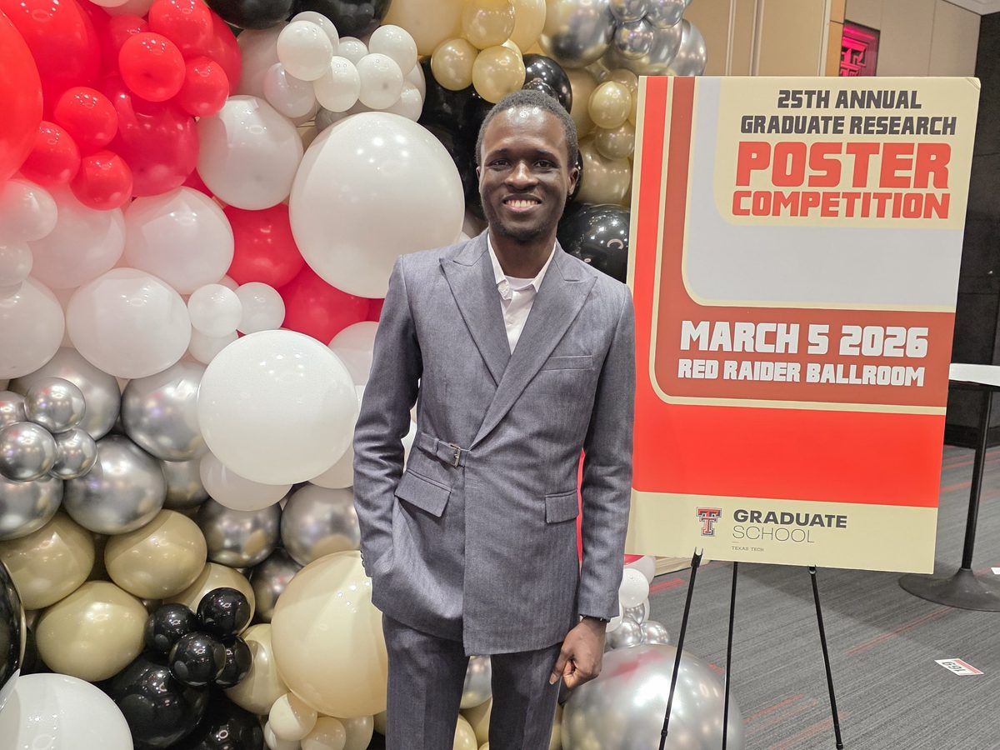

← Back to home
Publications
Publications
More than 20 peer-reviewed papers and conference abstracts on zoonotic disease, epidemic preparedness and health equity.
Peer-reviewed articles
- Oladoye MJ, Awosile B, Adekoya O, Rodriguez-Mori H, Akinkuotu O. Patterns of antiparasitic usage in Golden Retriever breed of dogs: a 9-year cohort study. Journal of Helminthology. 2026;100:e68. doi
- Akinsulie OC, Ulusan S, Idris I, Shahzad S, Okon J, Ukauwa C, Oladoye M, et al. Advances in antibody engineering for therapeutic development: molecular strategies and clinical applications. Immuno. 2026;6(2):23. doi
- Ugwu CE, Akinsulie OC, Ayandokun TF, Ajibade FA, Shahzad S, Aliyu VA, Oladoye MJ, et al. Mechanisms and therapeutic potential of nutritional immunity. Pathogens. 2026;15(2):176. doi
- Shahzad S, Akinsulie OC, Idris I, Devnath P, Ajagbe D, Aliyu VA, Oladoye MJ, et al. Ticks and tickborne diseases in Global South countries: impact and implications of environmental changes. Frontiers in Tropical Diseases. 2025;6:1597236. doi
- Olufadewa II, Adesina MA, Oladele RI, et al. (incl. Oladoye MJ). Mpox in endemic regions in Nigeria: awareness, knowledge, and willingness to accept the mpox vaccine. Pan African Medical Journal. 2025;50(1):14. doi
- Ogunleye SC, Akinsulie OC, Aborode AT, et al. (incl. Oladoye M). The re-emergence and transmission of Monkeypox virus in Nigeria: the role of One Health. Frontiers in Public Health. 2024;11:1334238. doi
- Oladoye MJ. Winning the war against infectious diseases in Africa: insights from COVID-19 and Monkeypox. International Journal of Travel Medicine and Global Health. 2023.
- Ayorinde T, Olufadewa I, Adesina M, Oladele R, Oladoye M, Adene T, Asaolu O. The reemergence of the human Monkeypox: strengthening Africa's epidemic preparedness and response system. Annals of Medicine and Surgery. 2023. doi
- Oladoye MJ. An integrated approach to tackling climate change in Africa. Medical Research Journal. 2022. doi
- Oladoye MJ. Intranasal vaccines: a panacea to vaccine hesitancy? Medical Research Journal. 2022. doi
- Olufadewa IA, Adesina M, Oladoye MJ, Oladele RI, Ayorinde TA, Samuel A. Assessing the perception to the proposed COVID-19 vaccination in internally displaced persons camp in Abuja, Northern Nigeria. Academia Letters. 2021. doi
- Oladoye MJ. Monkeypox: a neglected viral zoonotic disease. European Journal of Medical and Educational Technologies. 2021. doi
- Olufadewa II, Adesina MA, Oladele RI, Oladoye MJ, Akinmuleya T, Ogunleye E. COVID-19 and the economy: job loss and economic shutdown. Medical Research Journal. 2021. doi
- Olufadewa II, Adesina MA, Abudu FR, et al. (incl. Oladoye MJ). Comprehensive sexuality education (CSE) in reimagining HIV inequality. Medical Research Journal. 2021. doi
- Olufadewa II, Adesina MA, Oladele RI, Oladoye MJ, Eke NFA. Global Fund: analyzing 10 years of bridging health inequalities. International Journal of Health Planning and Management. 2020. doi
Under review
- Oladoye MJ, Mori HR, Adekoya O, Akinkuotu O. Soil-transmitted protozoans in the United States: a scoping review of Giardia, Cryptosporidium and other enteric protozoa. 2026.
- Idris I, Awosile B, Oladoye M, Adekoya O, Mori HR, Akinkuotu O. Epidemiology and temporal trends of gastrointestinal parasites and vector-borne pathogens in Golden Retriever dogs: an eight-year cohort study. 2026.
Conference abstracts and posters
- Oladoye MJ, Adekoya O, Zihadi MAH, Akinkuotu O. Cryptosporidium prevalence and molecular detection in Texas Panhandle shelter dogs. Annals of Epidemiology (American College of Epidemiology Annual Meeting). 2026. doi
- Oladoye M, Rodriguez-Mori H, Adekoya O, Akinkuotu O. Soil-transmitted protozoans in the United States. Amarillo Research Symposium. 2026.
- Oladoye M, Awosile B, Adekoya O, Akinkuotu O. Patterns of antiparasitic usage in Golden Retriever dogs. TTU SVM Phi Zeta Research Day. 2026.
- Adesina MA, Asaolu OT, Oladoye MJ, Olufadewa II, Adene T. Antimicrobial resistance pattern of Salmonella typhi in low- and middle-income countries: a systematic review. 13th International Conference on Typhoid and Other Invasive Salmonelloses. 2023.
- Oladoye M. The neglect of tuberculosis control in Africa amidst the COVID-19 pandemic. International Congress on Infectious Diseases. 2022.
- Oladoye M, Ekott M, Lawal T. Maternal mortality rate and adolescent fertility rate among 45 African countries. Racialized Maternal Health Conference. 2022.
- Oladele R, Adesina M, Olufadewa I, Oladoye M, et al. Health financing in sub-Saharan Africa: analysing trends from 1990–2017. ARUA Biennial Conference. 2021.
- Adesina M, Abudu F, Olufadewa I, Oladele R, Oladoye M, et al. SWOT analysis of pro-vaccination campaigns in Africa. IAS COVID-19 Conference. 2021.
- Adesina M, Olufadewa I, Oladele R, Abudu F, Oladoye M, et al. Learning from digital health in curtailing the coronavirus epidemic: review of HIV/AIDS mobile apps and chatbots in Nigeria. HIV Research for Prevention Conference. 2021.
